2025-10-14
Paper on TREAT: A Unified Text-guided Conditioned Deep Learning Model for Generalized Radiotherapy Treatment Planning by Sangwook Kim, Y. Gao, T. G. Purdie, C. McIntosh accepted to MICCAI 2025!
We present ProbMED, a novel probabilistic framework that enables robust multimodal learning in healthcare by binding diverse medical data types including images, text, and physiological signals. Our approach addresses uncertainty quantification and enables more reliable clinical decision support through principled probabilistic modeling of multimodal medical embeddings.
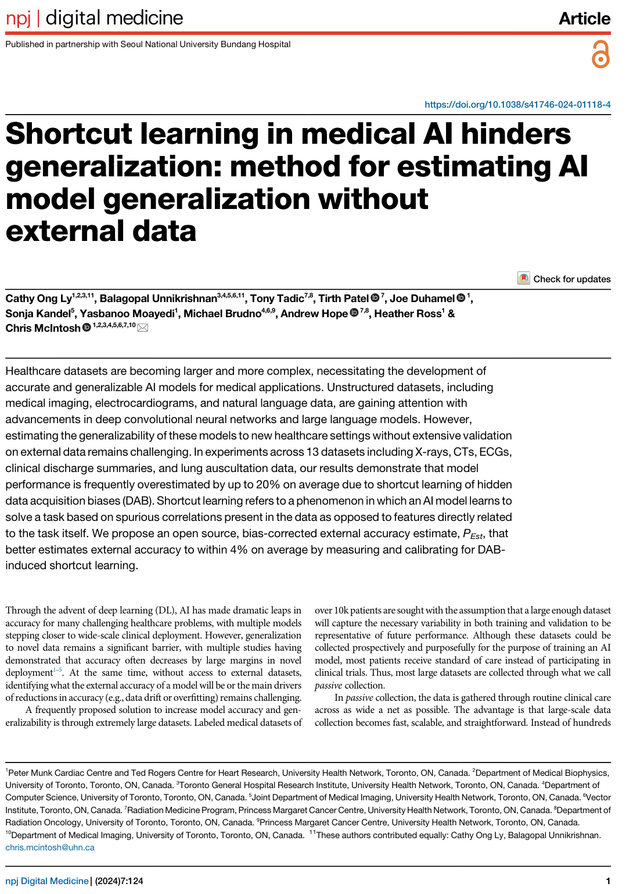
Unstructured datasets, including medical imaging, electrocardiograms, and natural language data, are gaining attention with advancements in deep convolutional neural networks and large language models. However, estimating the generalizability of these models to new healthcare settings without extensive validation on external data remains challenging. We propose an open source, bias-corrected external accuracy estimate that better estimates external accuracy to within 4% on average by measuring and calibrating for bias induced shortcut learning.
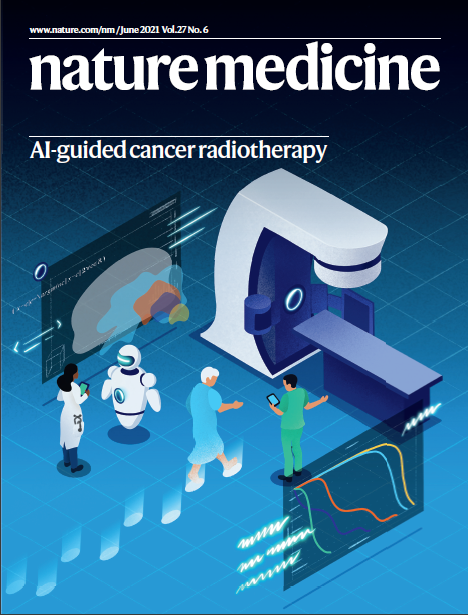
We describe an AI model that generates radiation treatment plans for prostate cancer patients. AI was successfully deployed in a standard-of-care clinical setting, providing gains in efficiency, improved treatment quality, and an understanding of physicians’ decision-making and perceptions of AI use when patient care is at stake.
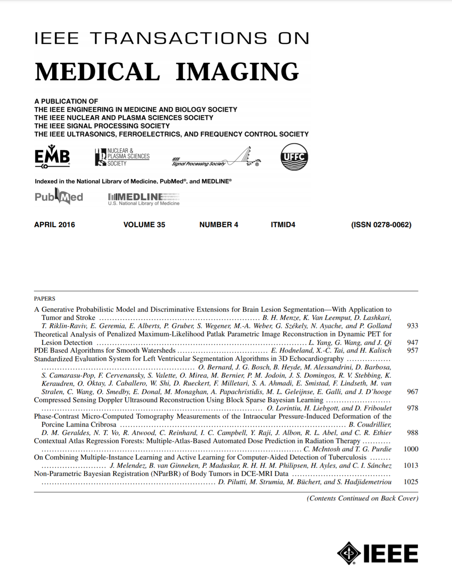
We present a proof-of-concept for a method to automatically infer the radiation dose directly from the patient's treatment planning image based on a database of previous patients with corresponding clinical treatment plans. Our method uses regression forests augmented with density estimation over the most informative features to learn an automatic atlas-selection metric that is tailored to dose prediction.
Paper on TREAT: A Unified Text-guided Conditioned Deep Learning Model for Generalized Radiotherapy Treatment Planning by Sangwook Kim, Y. Gao, T. G. Purdie, C. McIntosh accepted to MICCAI 2025!
Paper on EchoingECG: An Electrocardiogram Cross-Modal Model for Echocardiogram Tasks by Yuan Gao, Sangwook Kim, C. McIntosh accepted to MICCAI 2025.
Paper on ProbMED: A Probabilistic Framework for Medical Multimodal Binding by Yuan Gao, Sangwook Kim, M. You, C. McIntosh accepted to ICCV 2025.
Congratulations to Cathy Ong Ly who successfully defends her PhD thesis on “AI Model Generalizability and Shortcut Learning in Healthcare”.
Congratulations to Aly Khalifa who successfully defends his PhD thesis on “Automated Treatment Planning for Adaptive Radiation Therapy”.
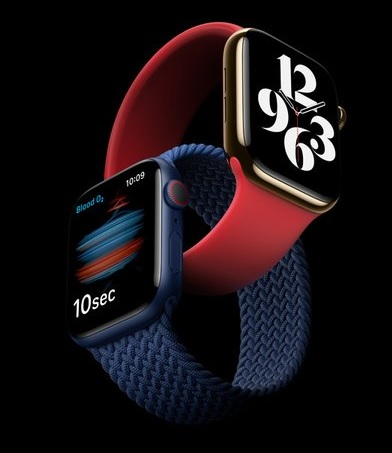
Canadian Healthcare Technology features our smartwatch research on AI-enabled remote heart failure monitoring.

Paper on Multi-task learning for automated contouring and dose prediction in radiotherapy by Sangwook Kim, Aly Khalifa, T. G. Purdie, C. McIntosh published in Physics in Medicine and Biology.
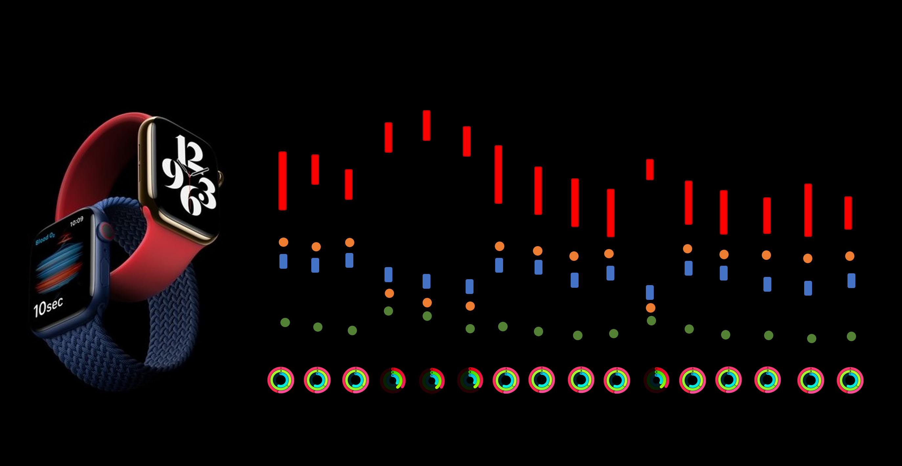
Paper on Developments in Digital Wearable in Heart Failure and the TRUE-HF Apple Study by Y. Moayedi, F. Foroutan, Y. Gao, C. McIntosh, H. J. Ross et al. in Circulation: Heart Failure.
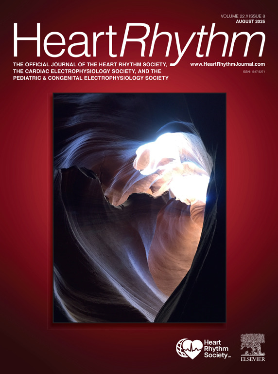
Paper on Machine Learning Identifies Arrhythmogenic Features of QRS Fragmentation in Human Cardiomyopathy by C. Ong Ly, A. M. Suszko, N. C. Denham, P. Chakraborty, M. Rahimi, C. McIntosh, V. S. Chauhan in Heart Rhythm.
Dr. McIntosh featured on EMJ Podcast on AI at the Heart of Medicine discussing bench-to-bedside translation and fairness.
Paper on Multi-task learning for automated contouring and dose prediction in radiotherapy by Sangwook Kim, Aly Khalifa, et al. accepted to Physics in Medicine and Biology.
UHN Research features our work on predicting AI tool performance (model generalizability without external data).
Paper on MEDBind: Unifying Language and Multimodal Medical Data Embeddings by Yuan Gao, Sangwook Kim, D. E. Austin, C. McIntosh accepted to MICCAI 2024.
Paper on Machine learning automated treatment planning for online MR-guided adaptive radiotherapy by Aly Khalifa, J. D. Winter, C. McIntosh, T. G. Purdie in Physics and Imaging in Radiation Oncology.
Paper on Unlocking Tomorrow’s Health Care: Expanding the Clinical Scope of Wearables by Applying AI by T. B. Marvasti, Y. Gao, K. R. Murray, S. Hershman, C. McIntosh, Y. Moayedi in Canadian Journal of Cardiology.
Paper on Shortcut learning in medical AI and estimating model generalizability without external data by Cathy Ong Ly, B. Unnikrishnan, T. Tadic, T. Patel, J. Duhamel, S. Kandel, Y. Moayedi, M. Brudno, A. Hope, H. Ross, C. McIntosh in npj Digital Medicine 7(1):124.
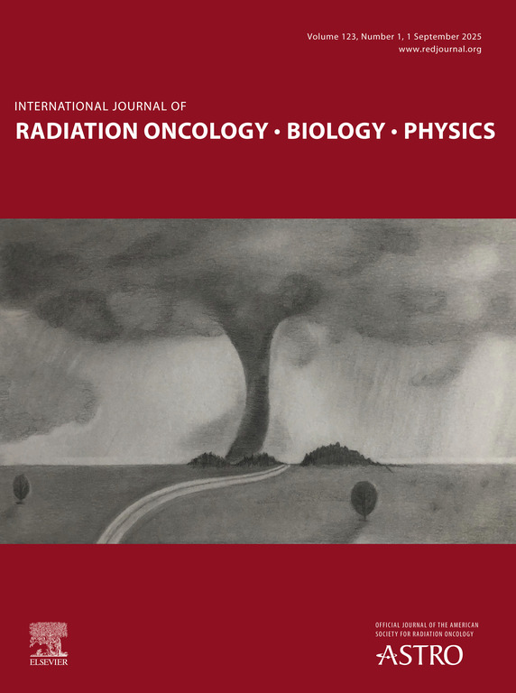
Paper on A Prospective Study of Machine Learning-Assisted Radiotherapy Planning for Patients Receiving 54 Gy to the Brain by D. S. Tsang, G. Tsui, A. T. Santiago, H. Keller, T. G. Purdie, C. McIntosh, et al. in IJROBP.
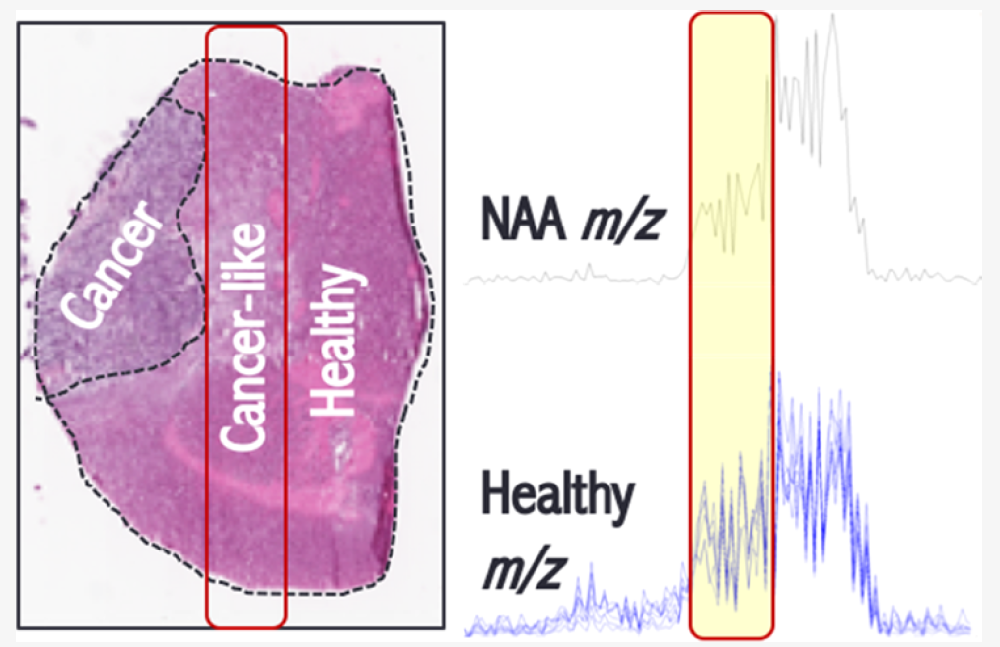
Paper on Lipidomic-Based Approach to 10 s Classification of Major Pediatric Brain Cancer Types with PIRL-MS by Michael Woolman, T. Kiyota, S. A. Belgadi, N. Fujita, A. Fiorante, V. Ramaswamy, J. T. Rutka, C. McIntosh, D. G. Munoz, H. J. Ginsberg, A. Aman, A. Zarrine-Afsar in Analytical Chemistry 96(3):1019–1028.
Conference paper Cross-Task Attention Network: Improving Multi-task Learning for Medical Imaging Applications by S. Kim, T. G. Purdie, C. McIntosh at MICCAI 2023.
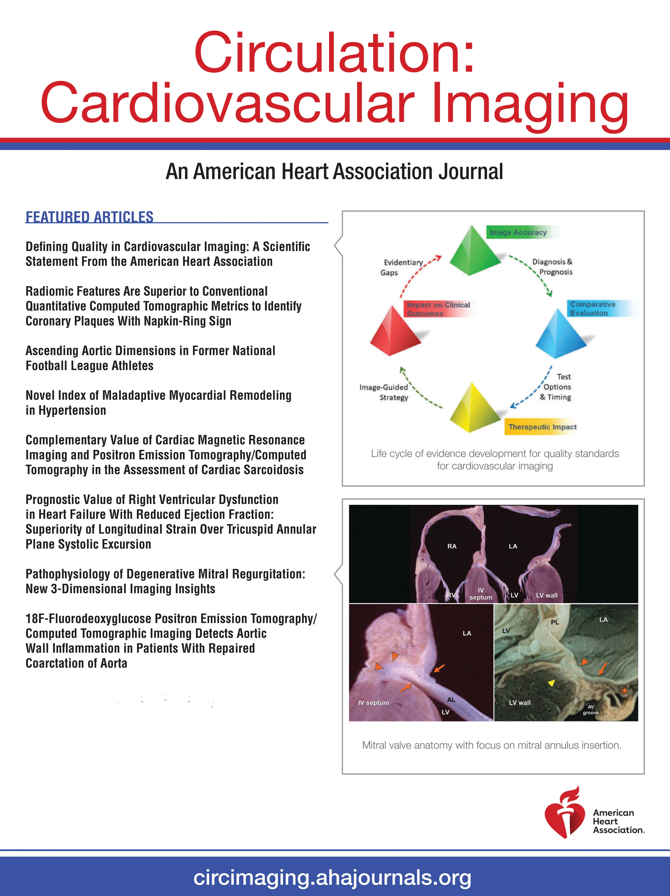
Paper on Machine Learning for Prediction of Adverse Cardiovascular Events in Adults With Repaired Tetralogy of Fallot Using Clinical and CMR Variables by A. Ishikita, C. McIntosh, K. Hanneman, M. M. Lee, T. Liang, G. R. Karur, S. L. Roche, E. Hickey, T. Geva, D. J. Barron, R. M. Wald in Circulation: Cardiovascular Imaging 16(6):e015205.
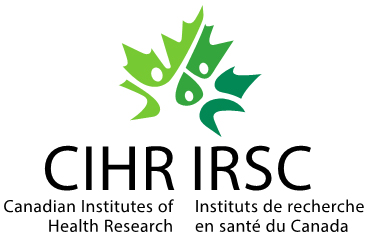
Aly Khalifa and Yuan Gao are awarded CIHR CGS-D fellowships for 3-years!
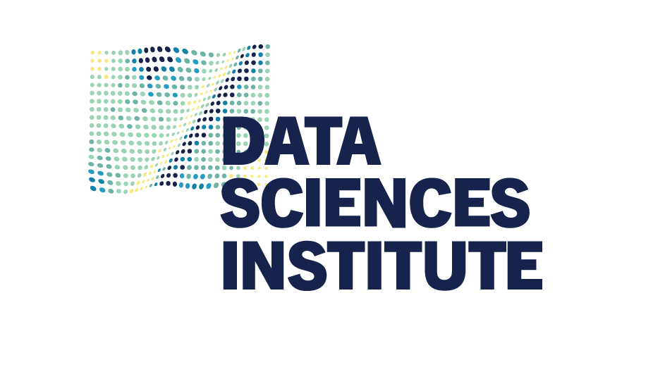
Sangwook Kim awarded DSI fellowship for 3-years!
Yuan Gao successfully passes his PhD reclassification exam on Temporal Deep Learning Applications in Healthcare Monitoring and Wearables!
Paper on Comprehensive CMR Tissue Characterization and Cardiotoxicity in Women With Breast Cancer by P. Thavendiranathan, T. Shalmon, C. S. Fan, C. Houbois, E. Amir, Y. Thevakumaran, E. Somerset, J. M. Malowany, C. Urzua-Fresno, P. Yip, C. McIntosh et al. in JAMA Cardiology 8(6):524–534.
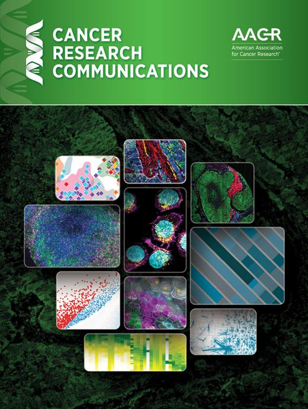
Paper on Multi-institutional prognostic modelling in head and neck cancer: evaluating impact and generalizability of deep learning and radiomics by M. Kazmierski, M. Welch, S. Kim, C. McIntosh, et al. in Cancer Research Communications.
Paper on A pilot study of machine-learning based automated planning for primary brain tumours by D. S. Tsang, G. Tsui, C. McIntosh, T. Purdie, et al. in Radiation Oncology 17:1–6.
Paper on Understanding machine learning classifier decisions in automated radiotherapy quality assurance by Y. Chen, D. M. Aleman, T. G. Purdie, C. McIntosh in Physics in Medicine & Biology 67(2):025001.
Paper on Domain adaptation of automated treatment planning from CT to MR by A. Khalifa, J. D. Winter, I. Navarro, C. McIntosh, T. G. Purdie in Physics in Medicine & Biology.
Aly Khalifa successfully passes his PhD reclassification exam on Automated Treatment Planning for Adaptive Radiation Therapy!
Paper on SuPART: supervised projective adapted resonance theory for automatic QA approval of radiotherapy treatment plans by H. Kamran, D. M. Aleman, C. McIntosh, T. G. Purdie in Physics in Medicine & Biology 67(6):065004.
Paper on prospective cancer radiotherapy using our AI platform by Chris McIntosh et al. in Nature Medicine (cover feature).
Paper on Mass spectrometry gradient analysis of cancer (Woolman et al., incl. C. McIntosh) in Analytical Chemistry.
Siham successfully passes her PhD reclassification exam on Deep learning for Automatic Medical Image Segmentation!
Cathy passes PhD reclassification exam on AI image-based biomarker for interventional cardiovascular risk-stratification.
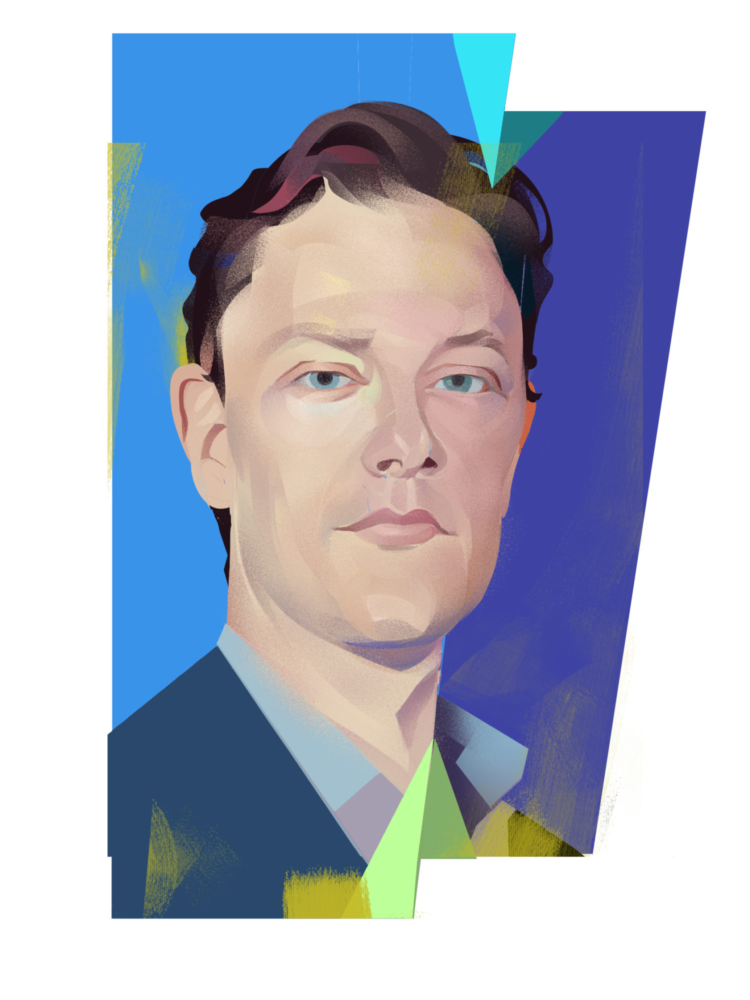
Drs. Rubin, Wong, and McIntosh featured in UHN Foundation interview on Intelligent Outcomes in medicine with AI (illustrations by Kyle Scott).
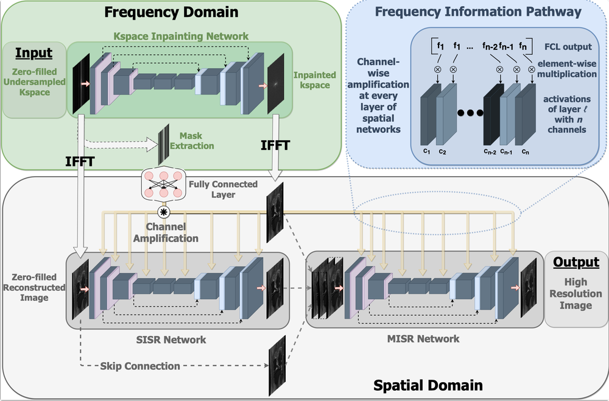
Paper on Cross domain fusion for MRI reconstruction accepted to MICCAI 2020.
Dr. Chris McIntosh appointed as Chair in Medical Imaging and AI at the Joint Department of Medical Imaging and University of Toronto.
Apple announces key partnership with Drs. Heather Ross, Yas Moayedi, and our team on Apple Watch–based AI for heart failure insights.
McIntosh Lab secures PMCC Innovation Award for an AI-driven system for automatic coronary angiographic interpretation.
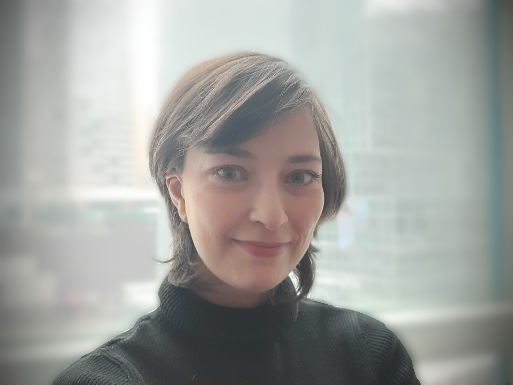
Siham Amara-Belgadi (PhD Student)
Sangwook Kim (PhD Student)
Balagopal Unnikrishnan (PhD Student)
William Gao (PhD Student)
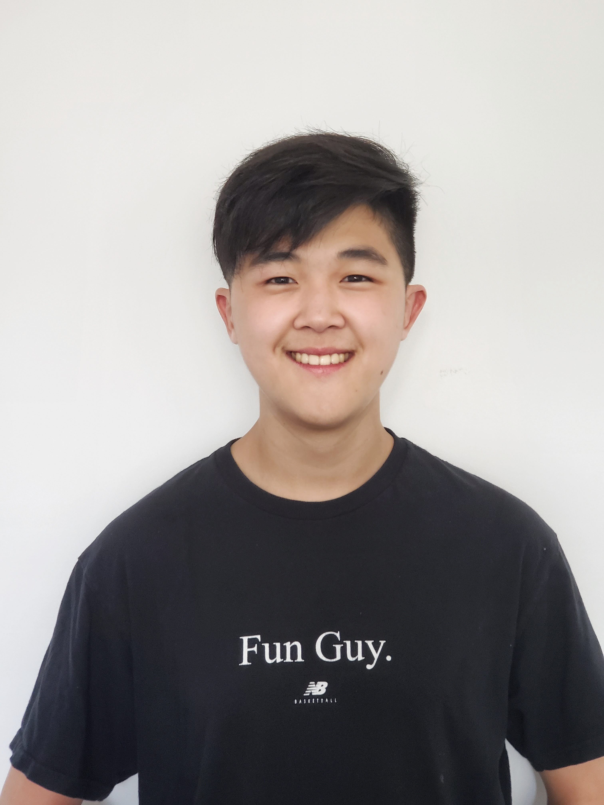
Sejin Kim (PhD Student)
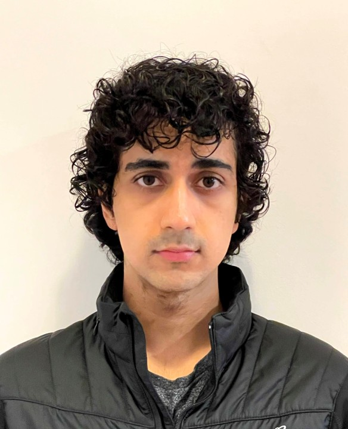
Bhavish Verma (PhD Student)
Max You (PhD Student)
Gerd Bizi (MSc Student)
Aly Khalifa (Physics Resident, Princess Margaret Cancer Centre)
Cathy Ongly (Risk Modelling, RBC)
Innovation doesn't happen in a vacuum. Jointly embedded in Canada's largest hospital network and the University of Toronto, our research brings together experts and trainees in computer science, medicine, biology, and physics to solve impactful problems at the intersection of artificial intelligence and medicine.
Medical domains: Our work includes a variety of data modalities (biological, wearable, structured reporting, and imaging) and critical diseases such as heart disease and cancer. We work closely with clinicians to understand and ultimately augment patient care with AI.
AI technologies: Solving clinical problems means pushing and extending the boundaries of AI and machine learning technology including semi-supervised learning, domain adaptation/model generalization, meta-learning, and multi-modal data fusion.
Data: We work on datasets of all shapes and sizes, from rare diseases with rich structured data but few patients, to diverse imaging datasets in the tens of thousands.
Keep reading below for example projects.
Wearable technologies offer a unique glimpse into patient function and biology outside of episodes of care. If AI is the present, wearbles with AI are the next frontier. Working with leading cardiologists Heather Ross and Yas Moyaedi, the Ted Rogers Centre for Heart Research, and a key partnership with Apple we are developing AI technology to asses the role of wearbles in heart failure.
Multimodal large language models in healthcare represent a cutting-edge fusion of advanced linguistic capabilities and diverse data sources. By seamlessly integrating text, images, electrocardiograms, and more these models harbor great potential to enhance clinical care through more robust and generalizable machine learning.
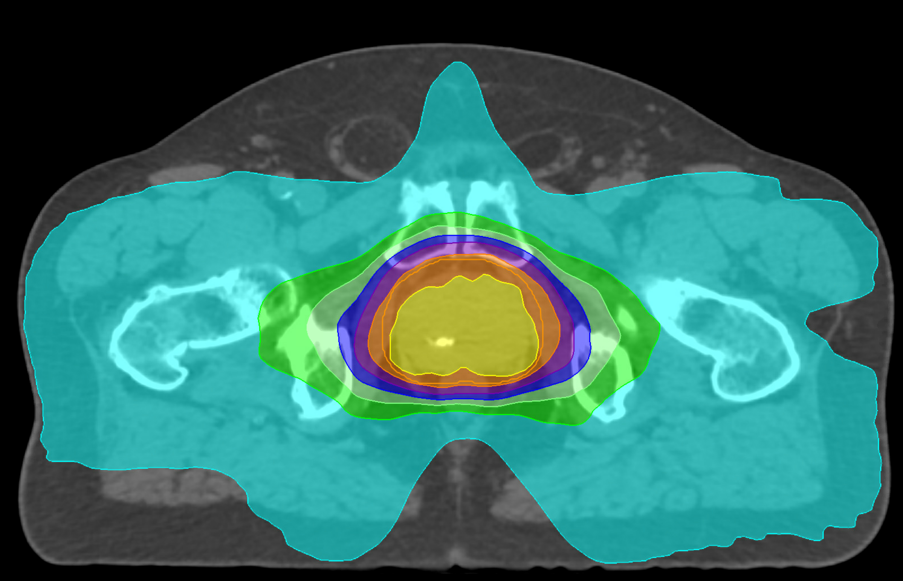
An experienced clinical team can more than double a cancer patient's odds of survival. In particular, radiation therapy (RT) is a key part of the treatment for 40% of all cancer patients with the potential to be highly curative and effective given the right treatment plan. However, a major barrier in that effectiveness is the expertise and experience of the patient's clinical team in his or her particular cancer. We believe that AI can help bring the expertise of the world's best clinical teams to every patient in every hospital, saving lives and costly resources.
Working with clinical partners (Tom Purdie, Ale Berlin, and Leigh Conroy) we have developed the world's first computer vision treatment system that we piloted to treat prostate cancer patients at Princess Margaret Cancer Centre, with superior results to our standard of care for the majority of patients. Cancer treatments are generated by the AI in minutes, instead of the hours-to-days taken under the typical manual process, increasing both efficiency and quality of care. Follow-up studies are expanding the models to breast cancer, brain tumours in young adults, and more. Through a successful licensing deal of this Canadian technology to RaySearch Laboratories we are also supporting deployment across Canada and around the world.

The promise of AI in healthcare hinges on models that can generalize across different hospitals, patient populations, and clinical settings. However, unstructured medical data—from imaging scans to ECGs to clinical notes—presents unique challenges for model validation and deployment.
Our research addresses a critical gap: how to estimate whether an AI model trained at one institution will perform reliably at another, without requiring extensive external validation studies. We've developed novel bias-corrected methods that can predict external accuracy within 4% on average by identifying and calibrating for problematic "shortcut learning" that models often exploit.
This work enables more confident deployment of AI systems across healthcare networks and helps ensure that the benefits of machine learning reach patients regardless of where they receive care.
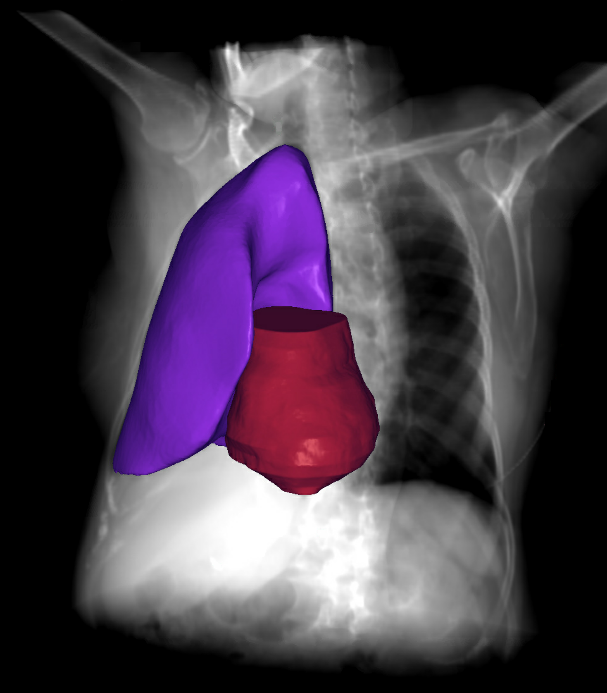
Image segmentation is the gold standard for computational morphology and a key step in the radiation therapy process. A long sought after technology, automated segmentation methods are recently achieving near clinical performance, paving the way for clinical studies and real-world deployment. Our research focuses on developing robust deep learning approaches for multi-organ segmentation that can handle the variability encountered across different imaging protocols and patient populations.
Building on our success in automated treatment planning, we are now conducting clinical studies to evaluate the integration of AI-driven segmentation tools into routine clinical workflows. These studies are examining both the accuracy and efficiency gains of automated contouring in radiation therapy, with early results showing potential savings for clinicians while maintaining high-quality treatment planning standards. However, many challenges remain, including handling edge cases, ensuring consistent performance across diverse patient anatomies, and seamlessly integrating these tools into existing clinical systems.
 "Jobs Help Wanted" by Innov8social is licensed under CC BY 2.0
"Jobs Help Wanted" by Innov8social is licensed under CC BY 2.0

We are seeking exceptional postdoctoral fellows to join our interdisciplinary team developing AI solutions that directly impact patient care. Ideal candidates have strong expertise in machine learning and deep learning, with demonstrated experience in healthcare applications involving medical signals, imaging, or wearable data.
Our postdocs work on cutting-edge projects from multimodal AI models to clinical deployment of radiation therapy planning systems. We offer competitive funding, mentorship opportunities, and the chance to publish in top-tier venues while making real-world clinical impact.
Interested candidates should submit a CV, cover letter describing research interests and career goals, your most relevant publication, and contact information for three references to Chris McIntosh with the subject line "Postdoctoral Fellowship Application".
Join our dynamic research lab where computer science meets clinical medicine. We welcome motivated students passionate about developing AI technologies that save lives and improve patient outcomes. Our graduates publish in venues like Nature Medicine, ICCV, and MICCAI while contributing to technologies deployed in hospitals worldwide.
We seek students with strong programming skills and background in machine learning, computer vision, or related fields. Prior experience in healthcare or medical imaging is valuable but not required—we provide comprehensive mentorship to help you develop expertise at the intersection of AI and medicine.
Interested students must apply to either the Department of Medical Biophysics (preferred) or Computer Science based on your background and interests. Feel free to reach out before applying to discuss research opportunities.
Experience the excitement of healthcare AI research through our summer internship program. Work alongside graduate students and postdocs on projects ranging from wearable device biomarkers to automated medical imaging analysis. Our summer students often contribute to publications and gain valuable experience for graduate school applications.
We welcome undergraduate students with programming experience and coursework in machine learning, computer science, or related fields. Interest in healthcare applications and strong problem-solving skills are essential.
Apply through the MBP summer student program or contact us directly to discuss project opportunities and eligibility for other summer research programs.
 (1).png)